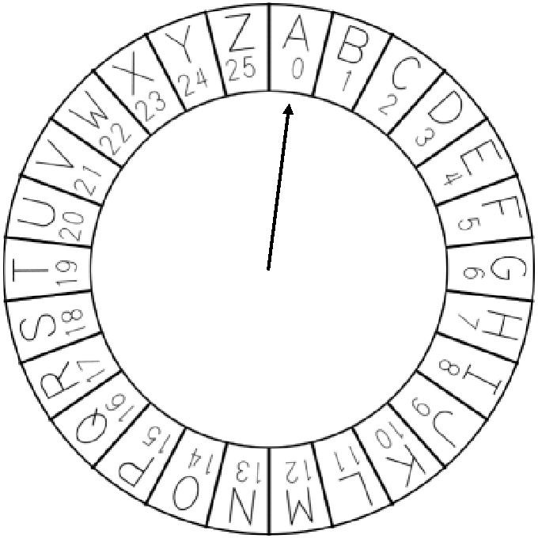

You have an opportunity to visit Masterchef Singapore season 10th winner, Gordon Hamlay, who is known as a chiffon cake king.
He wants you to solve a word for him before letting you read his secret recipe (Who knows!
You can be a billionaire with his recipe!!). He showed you a recipe that he is currently working on and he whispered
“remember to always use your right hand for dry ingredients”. Can you figure out what the word is?

| Ingredients for chocolate chiffon cake |
Weight (by %) |
| Egg Yolk |
5 |
| Egg White |
12 |
| Oil |
8 |
| Milk |
9 |
| Cake Flour |
13 |
| Cocoa Powder |
13 |
| Corn Flour |
8 |
| Cream of Tartar |
4 |
| Baking Powder |
8 |
| Baking Soda |
4 |
| Sugar |
8 |
| Salt |
4 |
RECIPE
- Whisk the egg yolk in a mixing bowl.
- Add baking powder followed by baking soda into the mixing bowl.
- Sift the cake flour first and then the cocoa powder into it.
- Add egg whites into a mixer bowl and whisk until soft peak, then add sugar into it and continue to whisk until stiff peak.
- Prepare the oil in a separate bowl and add in salt.
- Mix gently and add in milk.
- Add corn flour into it, mix gently then lastly add in cream of tartar